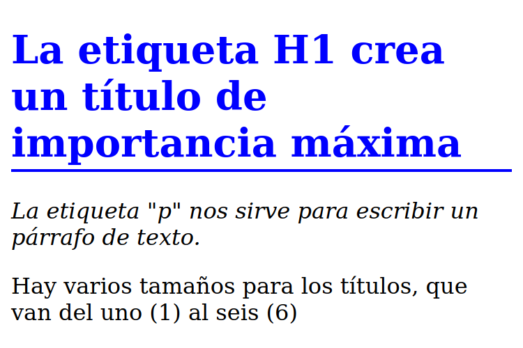

Tutorial de HTML
Explico muchas cosas, como si nunca antes hubieras programado. Sin embargo, se espera un mínimo de inglés para poder conocer el significado de head, body, article, footer, etc.
Poné el cursor del mouse (o dedo si estás desde una pantalla touch) arriba de los links en color azúl para tener información extra. ¡Ojo! Los links en color celeste te llevan a otras páginas, para mostrarte links de interés y documentación vital para ser un buen desarrollador :)
Te recomiendo usar Visual Studio Code para desarrollar sitios webs. Es mucho mejor que el block de notas de tu sistema operativo y es lo mejorcito para codear, y muy flexible y adaptable a otros lenguajes (cómo C/C++, C#, Java, Python, etc). ¡Empecemos!
¿Qué es y como se escribe el HTML?
El código HTML nos sirve para crear los elementos de nuestro sitio web. Cada elemento tiene un nombre, cómo h1, p, a, etc. Estos nombres aparecen -en el código- entre "picos" de apertura y cierre.
- Signo menor que<
- Signo mayor que>
Encerrar un "nombre" entre picos de apertura y cierre se lo denomina etiqueta HTML. Estas etiquetas HTML abundan en los sitios webs actuales, y permiten crear títulos de distinta importancia, párrafos, links y más.
Ejemplo
¿Cómo se diseña una web?
Como estábamos diciendo, las etiquetas te permitirán crear objetos para colocar en su web. Pero el aspecto de estos objetos estarán determinados a tu gusto y con otro lenguaje: CSS.
Hoy por hoy es muy común que un diseñador "front-end" sepa programación y dos lenguajes o más.
Escribir CSS es como escribir en Inglés o Javascript (ponele), que dicho sea de paso, será otro lenguaje que tendrás que dominar en un futuro.
Supongamos que querés nombrar cada objeto con un identificador único. Tomando el ejemplo anterior, podríamos asignar un id (identificador) así:
Ejemplo:
¡Apliquemos estilos!
Ojo, lo que te voy a enseñar ahora no va a funcionar sólo. De hecho, aún no te dije que el código HTML de tu sitio web debería estar en un archivo con extensión html. Por ejemplo, podrías crear un archivo llamado test.html ahora mismo, y pegar el código que escribí más arriba, con los IDs.
¡Entonces bien! Cada identificador en HTML puede ser editado desde el CSS, así que crea un archivo main.css y pega el siguiente código.
Ejemplo:
Observá la sintáxis de CSS. Los IDs de HTML se referencian en CSS con el signo numeral, luego ponemos su nombre (debe coincidir con el escrito en HTML) y abrimos una llave. Entre las llaves de apertura y cierre están las propiedades del objeto que estamos creando, los cuáles se aplicarán a la etiqueta que tenga ese identificador en HTML.
Los comentarios en CSS se abren con /* y se cierran con */. Un comentario es una buena forma de explicar qué estamos haciendo en esa línea de código. :)
Ok... si abrís tu archivo test.html desde tu navegador preferido, no vas a ver ningún estilo, ni texto en cursiva o similar. Veamos un concepto más, muy importante.
Después, aprendamos la estructura principal de un archivo HTML y cómo ensamblar todo :).
Cajas comunes y bloques
Buenísimo, entonces si seguiste el tutorial al pie de la letra, tendrías un título y dos párrafos creados. Cada etiqueta HTML crea una caja. Hay cajas "comunes", que su tamaño es el justo y necesario para contener los objetos que tengan dentro, y cajas "de bloque". Éstas últimas tienen la propiedad CSS display: block; por defecto y ocupan todo el ancho que tengan disponible, cómo los títulos H1, H2, H3, etc.
Por esta razón, si vas al identificador de tu Titular H1 (en el CSS), y escribís dentro la propiedad text-align: center;, el titular se va a centrar horizontalmente en la pantalla, no así con otras etiquetas, cómo los links que son cajas comunes.
Ejemplo de caja de bloque
¡Hey! Ocupo todo el ancho que tengo disponible
El link ocupa sólo un pequeño espacio, aunque podríamos poner display: block; en su CSS, así:
En ese caso, el mismo link pero mostrado como bloque, sería así:
El link ya no ocupa sólo un pequeño espacio
¿Viste como el borde inferior ocupa todo el ancho? Eso demuestra como se expandió la caja que contiene el texto del link. Claramente el texto no ocupa todo el ancho por la simple razón de que no es una frase súper larga. Si querés ver más en detalle, hacé clic derecho en el link y luego Inspeccionar elemento. ¡Tu navegador te va a mostrar todo el código de esta página!
Ensamblemos todo
Ahora que sabés el concepto de cajas en forma de bloque, pasemos a unir el HTML con el CSS que estamos creando.
La primer parte de un archivo HTML sería el siguiente. La primer linea indica que el documento es de tipo HTML (5). Luego se abre la etiqueta HTML e indica el lenguaje de la página web.
Lo importante es lo que va entre nuestra cabecera (head). Allí estará el nombre de la pestaña en el navegador, la codificación del texto y los archivos CSS a utilizar, entre otras cosas que veremos mucho más adelante.
Prestá atención a los comentarios en HTML, que se crean de una forma diferente a la que te enseñé con CSS :O
Entonces bien, el código anterior no lo ve nuestro usuario pero nos sirve a nosotros para importar archivos extra CSS y Javascript, además de que Google también utiliza varios datos de nuestro head para posicionarnos en las búsquedas.
Veamos el resto del HTML, que es lo que verá el usuario en su pantalla.
Recordá que prácticamente todas las etiquetas en HTML se abren y se cierran en un órden determinado. Por ende, las etiquetas que abrimos deben cerrarse "de adentro para afuera", es decir que la primer etiqueta que se abre es "el padre", y se cerrará último.
Ejemplo:
Si te trabaste, revisa este archivo comprimido zip que te preparé. Recordá mantener una estructura de proyecto prolija. Yo suelo usar ésta:
- css/(carpeta) Para los estilos
- img/(carpeta) Para las imágenes
- test.html(archivo) Mi página
-- Carpeta raíz --
El resultado del sitio que estamos armando
Algo así debería ser el sitio web que estamos haciendo
Las etiquetas y sus parámetros
La etiqueta de link, imágen, etc; no hacen nada por si solas. Todas las etiquetas pueden recibir parámetros, que son las palabras clave que están luego del nombre de la etiqueta en sí.
Ejemplo
La etiqueta img tiene, en este caso, dos parámetros:
- srcLa ruta a la imágen
- widthEl ancho de la imágen. La altura se ajustará para mantener la proporción, sin deformaciones.
Otros parámetros muy usados son href para referenciar una etiqueta HTML a algún link en particular, id y class.
El id ya sabés como se usa. Mientras que el id lo usás para identificar elementos HTML, las clases se usan muchísimo para darle estilos a los objetos.
Lo podés usar así:
La etiqueta style sirve para inyectar CSS puro dentro de un archivo HTML, aunque no es recomendable porque:
- Es complicado de leer en proyectos medianos y grandes.
- Suele ralentizar la carga del sitio, sobretodo si cargamos imágenes con la propiedad CSS background.
Es muy común que escribas un ID o Clase específico para un objeto. Aunque a veces es necesario, hacer ésto en exceso complica la lectura del código en proyectos medianos y grandes. Bah, en chicos también :P
Pensemos de forma modular
Suponete que estás creando un header para tu página. Querés que esté anclado arriba por más que hagas scroll, también querés un padding interno para que el texto no se pegue al borde de la pantalla.
Pero también querés hacer un footer con propiedades muy similares, sólo que no querés que el footer se ancle a ningún lado. Con que esté al final de la página, nos basta.
Ejemplo de CSS
Así debería lucir tu CSS, si pensamos de forma modular.
Esto está buenísimo, no sólo porque matás dos pájaros de un tiro, sino que acortás código y se vuelve más legible. Fijate que luego de declarar las propiedades de header y footer, escribo una propiedad (box-shadow) para darle sombra al header, y las próximas 3 líneas son para "fixear" la cabeza de la página arriba, a pesar de que el usuario haga scroll.
¿Y que onda con el padding? ¡Ajá! El padding lo vamos a usar mucho, así que en vez de poner esa propiedad en todos los objetos que lo necesiten, voy a crear una clase CSS para eso.
Esta clase la podés usar en cualquier objeto :)
Ejemplo para usar una clase
¿Viste que escribí var(--gap) en el CSS? Las variables en CSS son algo de hace pocos años, y (creo) dejaron a Less y Stylus como una "simple opción más" de darle estilos al HTML.
De hecho, todos los que me dicen que el CSS debería estar extinto es porque no saben ni la mitad de cosas que ofrece esta especificación. Sin embargo, les sugiero no fanatizarse y luego de dominar CSS, revisar otras tecnologías. Si te gusta este mundo, seguramente te quieras comer todos los tutoriales :D
Variables y unidades
Las variables en CSS aportan a la modularidad y mantenibilidad (¿esa palabra existe?) del código. No sólo porque podemos hacer que todos los objetos referencien a un color determinado, de forma que si al cliente no le gusta ese tono de azúl (por ejemplo) lo cambiamos con una línea de código, sino también porque las variables en CSS pueden almacenar un sinfín de tipos de datos distintos. Te listo algunos.
- pxPíxeles
- em1.6em = 1px
- vw ó vh
- Color hexadecimalColores de 6 caracteres
- Color rgb ó rgbaColores que podés manejar cambiando canales
Así que si quisieras guardar unas variables, deberías hacerlo dentro del selector :root, así:
Las variables se crean con dos guiones medios y su nombre. Luego dos puntos y el valor que tiene que almacenar :)
Para usar ese valor, llamamos al procedimiento var(), así: